Shoots and films first. Then the channels that carry them.
Every shoot starts on paper. We write the brief, script the story and plan the shots before anyone picks up a camera, so the day on location is about performance and light, not guesswork.
Three ways to work together.
-
We join one of your tours or activities and capture what happens, with no heavy staging.
What is included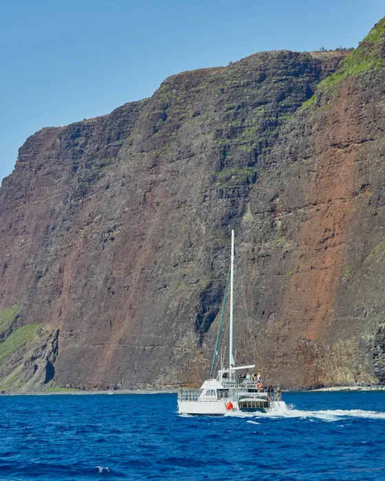
-
One planned day with a small, elite crew and a small cast, built on a brief, script and shot list.
What is included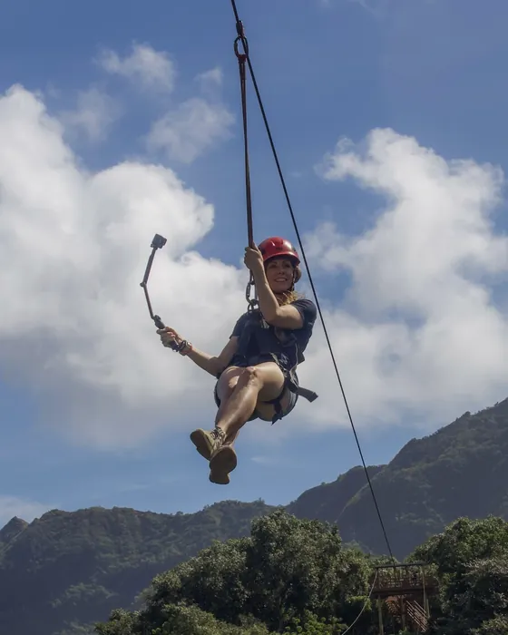
-
For larger stories
Multi-day production
Operators and brands telling a larger story or launching something.
Multiple days and locations with a full crew and cast, planned end to end.
What is included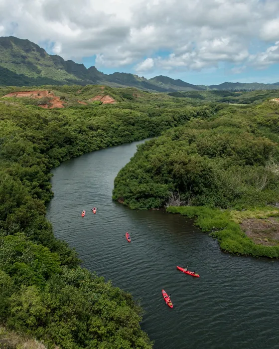
The retainer.
Content that gets shot is only half the job. We plan, schedule, caption and manage your channels so the film you invest in keeps working, and the audience it builds turns into reservations.
What the retainer covers
- Content planning and scripting
- Scheduling and captions
- Community management
- Influencer and brand partnership management
- Performance reporting
Shoots feed the content engine. The retainer keeps your channels working between shoots, so each film and photo set keeps earning bookings long after the day on location.
Creators who already have your guests' trust.
The right creator puts your operation in front of people who already trust them. We find the creators, manage the collaboration from first message to final post, and track what it brings in.
Written before it is shot.
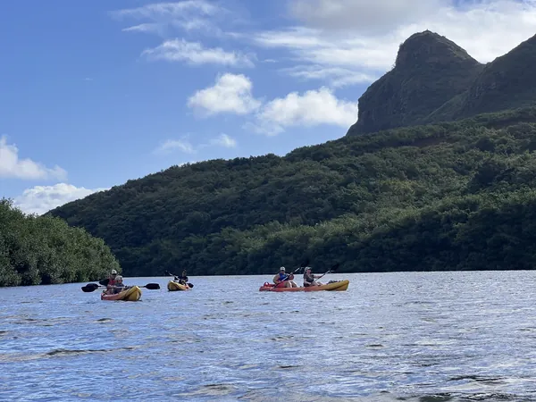
Conversation
We learn your operation, your guests and what you want them to feel.
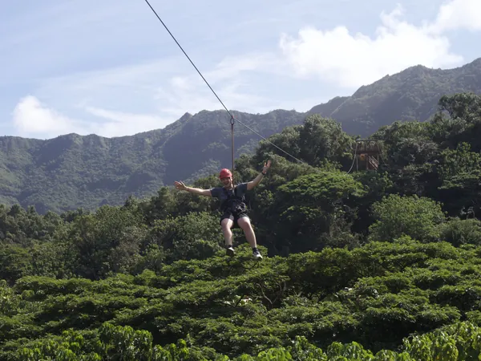
Brief and story
We write the brief, the story idea and the script.
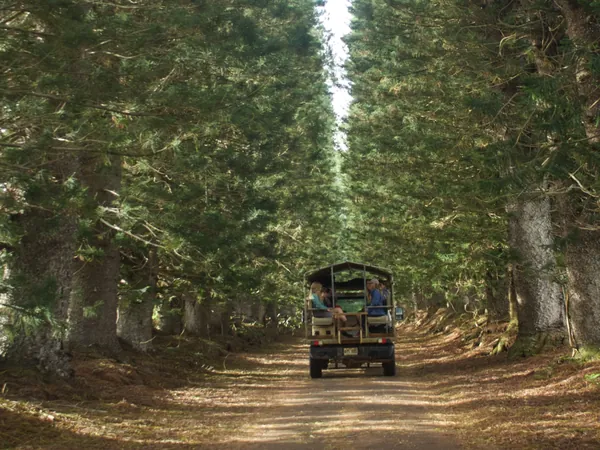
Plan
Shot list, mood board, schedule and cast, all shared with you before the day.
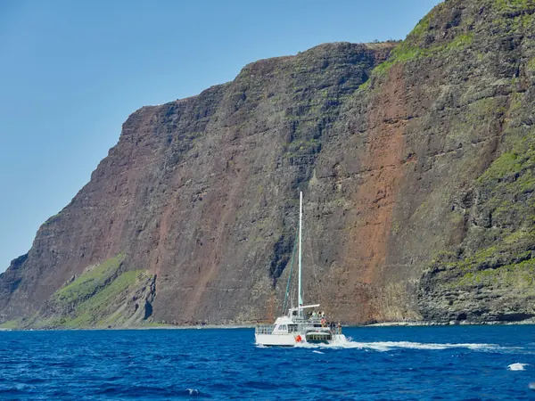
Shoot
A small crew on location; we direct, you run your tour.
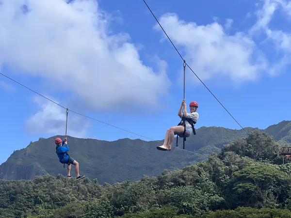
Edit and review
We cut the film and the reels, and you review them.
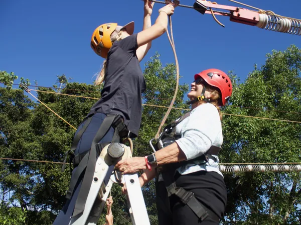
Delivery and plan
Final files, plus a plan for how the content gets used. Management clients continue into the retainer.
Operators who sell a feeling.
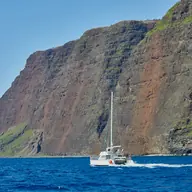
Boat and water tours
Catamarans, snorkel trips, sunset sails and dive boats. We capture the deck, the water and the moment the coast comes into view.
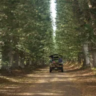
Land adventures
ATV, zipline, horseback and similar. We capture the red dirt, the first run and the look on a guest's face at the end of the line.
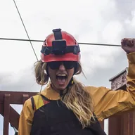
Events and markets
Festivals, markets and gatherings. We capture the crowd, the makers and the atmosphere that brings people back next time.
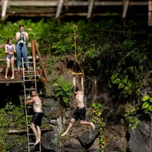
Wellness and fitness
Retreats, studios and outdoor fitness. We capture the place, the practice and how people feel when they leave.
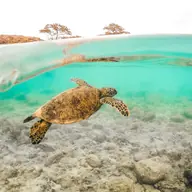
Nonprofits and conservation
Restoration projects and community work. We capture the people doing it and the story that moves supporters to act.
Questions operators ask
How long from booking to delivery?
It depends on the offer. A half-day shoot is usually on the calendar within a couple of weeks and the first edits follow a couple of weeks after. Single-day and multi-day productions are planned around your season, and the timeline is set in the brief.
What do you need from me on shoot day?
Access to the tour or location, a schedule we can plan around, and a point of contact on the day. We direct, you run your tour. Guests are never asked to do anything beyond what they came for.
Who owns the footage, and where can I use it?
Ownership and usage are stated in each offer and written into the agreement before we shoot. Talent releases are handled for anyone who appears in the work.
Can you shoot during my busy hours without disrupting guests?
Yes. Half-day shoots are built for exactly that: we join a tour that is already running and capture what happens, with no heavy staging. For planned shoots we work the schedule out with you first.
Tell us about your operation.
Share what you run and what you want guests to feel. We'll tell you how we would film it.
No pitch decks. A conversation about your operation first.